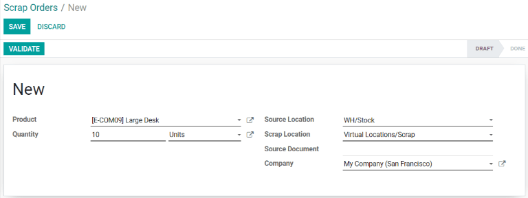
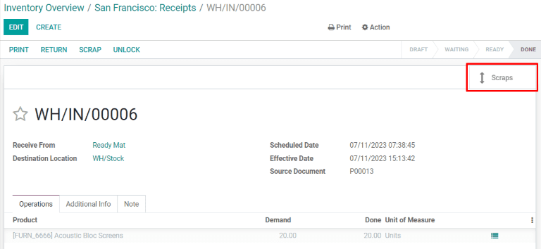

Scrap inventory¶
In some cases, a product in inventory may be damaged or found to be defective. If it is not possible to repair or return the product, Odoo Inventory allows users to scrap it, ensuring that usable inventory counts remain accurate.
Tip
Scrap orders can be viewed by navigating to . Each scrap order shows the date and time the order was created, along with the product and quantity that was scrapped.
To view the total quantity of each item scrapped, navigate to . Remove the Internal filter from the Search… bar to display virtual locations. Finally, select the Virtual Locations/Scrap location.
By default, scrapping a product removes it from physical inventory, and places it in a virtual location titled Virtual Locations/Scrap. A virtual location is not a physical space, but rather a designation in Odoo that is used to track items that are no longer in physical inventory.
Learn more
For more information about virtual locations, see the documentation about the different types of locations.
Scrap from stock¶
To scrap a product located in inventory, begin by navigating to . On the Scrap Orders page, click Create to configure a new scrap order.
On the scrap order, select the product being scrapped from the Product drop-down menu, then enter the quantity in the Quantity field. The Source Location defaults to the location where the product is stored, and the Scrap Location defaults to Virtual Locations/Scrap, but either of these can be changed by selecting a different location from their respective drop-down menus.
Finally, click Validate to scrap the product. The on-hand inventory count for the scrapped product updates to subtract the scrapped quantity.
Scrap from a receipt, transfer, or delivery¶
It is also possible to scrap products during the receipt, transfer, and delivery operations. This can be necessary if any products are found to be defective when receiving them into inventory, transferring them from one location to another, or preparing them for delivery.
To scrap a product during the receipt, transfer, or delivery operations, begin by navigating to the app. On the Overview page, select the # TO PROCESS button on the Receipts, Internal Transfers, or Delivery Orders card, depending on the type of operation the product is being scrapped from.
Note
For the Internal Transfers card to appear on the page of the app, the Storage Locations setting must be enabled. To do so, navigate to , then enable the checkbox next to Storage Locations under the Warehouse heading.
Alternatively, a list of all delivery orders, receipts, and transfers can be viewed by navigating to .
Next, open a delivery order, receipt, or transfer from the corresponding page by clicking on it. A Scrap button appears at the top of the page. Click it to open the Scrap pop-up window.

Important
The Scrap button will only appear on a receipt that has been validated. This is because Odoo only allows products to be scrapped once they have been entered into inventory.
On the Scrap pop-up window, select the product being scrapped from the Product drop-down menu. Then, enter the quantity in the Quantity field.
The Source Location defaults to the location where the product is stored, and the Scrap Location defaults to Virtual Locations/Scrap, but either of these can be changed by selecting a different location from their respective drop-down menus.
Finally, click Done to scrap the product. After doing so, the Scrap pop-up window disappears and a Scraps smart button appears in the top right of the page. Click it to view all of the scrap orders created from that operation.
